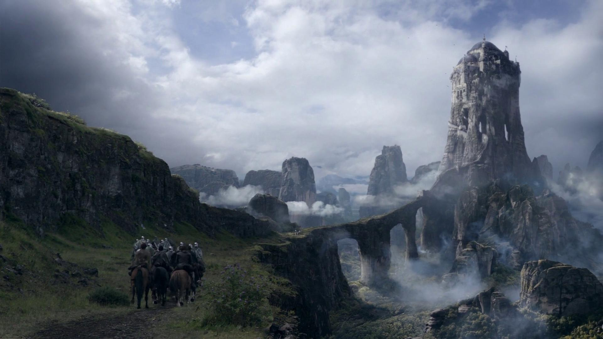
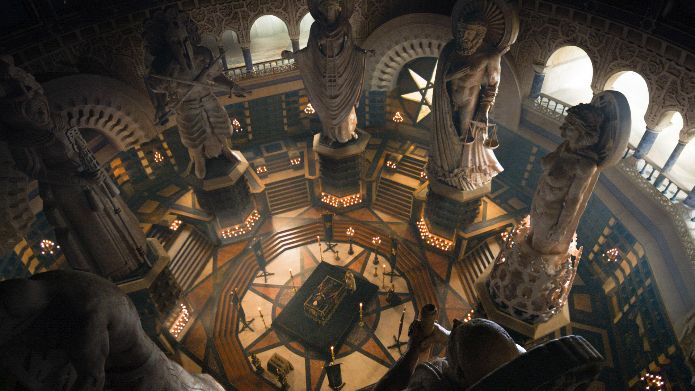
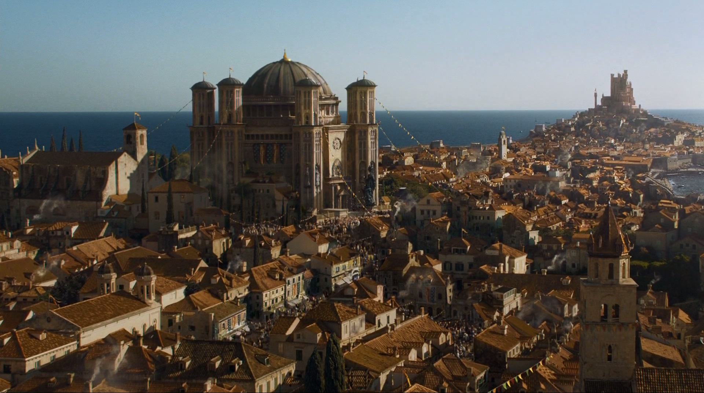

accueil
profil
familles
Arryn
Baratheon
Greyjoy
Martell
Lanister
Stark
Targaryen
Tully
Tyrell
votre histoire
blog
  
Game of Thrones
Il y a très longtemps, à une époque oubliée, une force a détruit l'équilibre des saisons. Dans un pays où l'été peut durer plusieurs années et l'hiver toute une vie, des forces sinistres et surnaturelles se pressent aux portes du Royaume des Sept Couronnes. La confrérie de la Garde de Nuit, protégeant le Royaume de toute créature pouvant provenir d'au-delà du Mur protecteur, n'a plus les ressources nécessaires pour assurer la sécurité de tous. Après un été de dix années, un hiver rigoureux s'abat sur le Royaume avec la promesse d'un avenir des plus sombres. Pendant ce temps, complots et rivalités se jouent sur le continent pour s'emparer du Trône de Fer, le symbole du pouvoir absolu.
Tweets sur @GameOfThrones
Vidéo
Dernier Billet de blog
"Et quoniam mirari posse quosdam peregronos existimo heac lecturos forsitan, si contigerit, quamobrem cum oratio ad ea montranda !!"